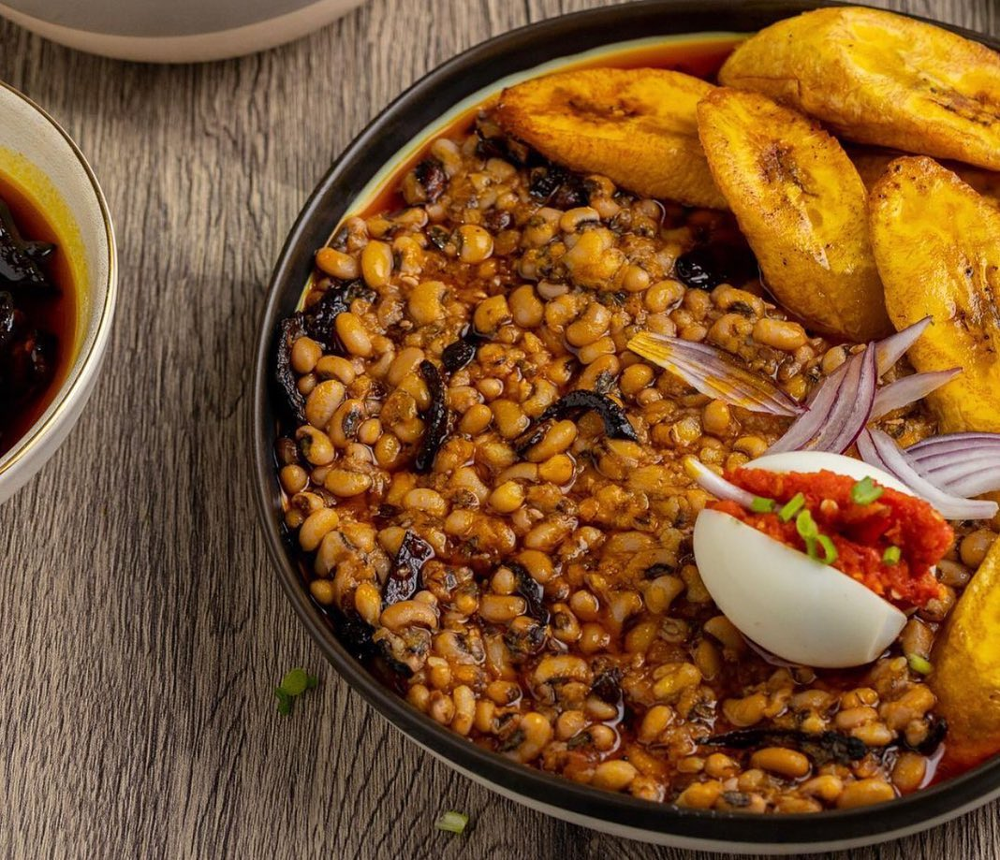

Gob3

Gob3 a delightful lunch best served with a mixture of palm oil, fried plantain and boiled eggs.
A meal, a Ghanaian man would choose any day over pizza, fried rice and chicken, as a matter
of facts, and food made of rice.
Only the finest of palm oil should be used in the mixture, and also the plantain should be well fried to
have that desired taste.
Ingredients
- A desied quantity of beans depending on the number of people eating. say two cups for a four memeber household.
- onions
- Gari
- Plantain
- oil preferablely palm oil
- eggs
- Pepper if prefered
- Salt bitter
Steps
- Wash your beans and seive out any bad ones.
- Pour a quantity of salt bitter and boil together with the beans/li>
- When the beans becomes soft, it means your beans is ready
- peel your plantain and cut into preffered sizes.
- Wash your cut pieces with salty water then fry until brown
- chop some onions
- fry your palm oil with cut onions
- Serve the beans hot together with your gari, fried plantain, boiled egg, grinded pepper with some onions and your oil.
Bon appetite
Return to homepage